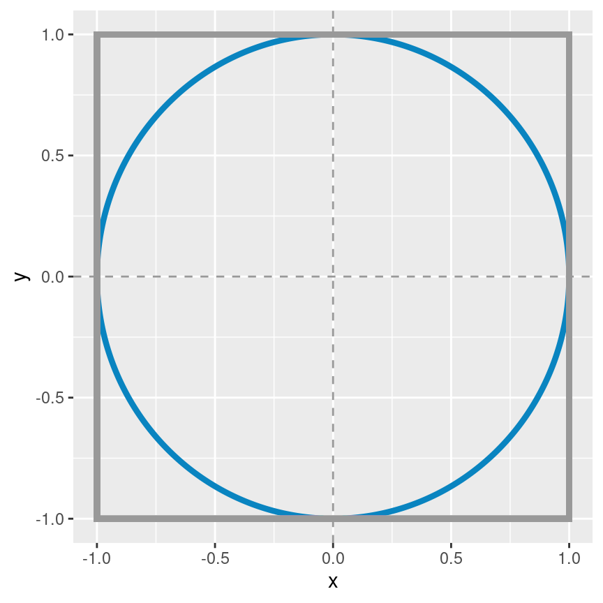

Práctica - Unidad 3
Métodos Computacionales
Sea \(X \sim \text{Normal}(\mu=3, \sigma=1.2)\).
- Elabore un gráfico que permita visualizar la función de densidad de probabilidad de \(X\).
- ¿Cuál es la probabilidad de que \(X\) sea menor a 2.5?
- ¿Cuál es la probabilidad de que \(X\) sea mayor a 4?
- ¿Cuál es la probabilidad de que \(X\) sea mayor 2 y menor 3?
Sea \(X \sim \text{Beta}(\alpha=10, \beta=2)\)
- Elabore un gráfico que permita visualizar la función de densidad de probabilidad de \(X\).
- ¿Cuál es la probabilidad de que \(X\) sea menor a 0.5?
- ¿Cuál es la probabilidad de que \(X\) sea mayor a 0.8?
- ¿Cuál es la probabilidad de que \(X\) sea mayor 0.25 y menor 0.75?
Responda los dos puntos anteriores sin evaluar la función de densidad ni la función de distribución de las variables aleatorias mencionadas. Para eso genere muestras que provengan de las correspondientes distribuciones y utilícelas para responder las preguntas mencionadas. Reflexione sobre las ventajas y desventajas de utilizar un enfoque basado en la simulación para resolver problemas.
Una variable aleatoria \(X\) toma valores en el conjunto \(\{2, 4, 6, 8, 10\}\) con igual probabilidad. Encuentre la media y el desvío estándar de las variables \(X\) e \(Y = 2X + 1\).
En un problema determinado la distribución a posteriori de la parámetro de inteŕes \(\alpha\) es \(\Gamma(k=3, \theta=1.5)\), donde \(k\) es el parámetro de forma y \(\theta\) es el parámetro de escala. Calcule la probabilidad de que \(\alpha^2\) sea mayor a 10.
Sean \(X\) e \(Y\) dos variables aleatorias independientes con distribución uniforme en el intervalo \([0, 1]\).
- ¿Cuál es la probabilidad de que \(X \le Y\)?
- Grafique los puntos muestreados coloreando de acuerdo a si la muestra satisface el evento antes mencionado o no.
Dos estudiantes de estadística deciden encontrarse en la fotocopiadora de la Facultad entre las 10 y las 11 de la mañana, eligiendo el tiempo de llegada al azar. La estudiante A esperará 10 minutos luego de llegar. Si el estudiante B no llega en ese intervalo, se irá. Lo mismo hace el estudiante B, pero este decide esperar 14 minutos. ¿Cuál es la probabilidad de que se produzca el encuentro en la fotocopiadora entre la estudiante A y el estudiante B?
Una máquina que se utiliza para ensamblar teléfonos celulares en una fábrica en Tierra del Fuego cuenta con tres componentes críticos para su funcionamiento. Ante una falla en cualquiera de estos componentes, la máquina se detiene. Las probabilidades de que estos elementos operen correctamente durante un día cualquiera son \(p_1 = 0.8\), \(p_2 = 0.9\) y \(p_3 = 0.7\). Responda las siguientes preguntas utilizando técnicas de simulación:
- ¿Cuál es la probabilidad de que la máquina falle en el primer día de uso?
- ¿Cuál es la probabilidad de que la máquina siga funcionando luego de 10 días?
- ¿Cuál es la probabilidad de que la máquina falle en el día 7 de uso?
- Sea \(T=\) Cantidad de días que la máquina funciona ininterrumpidamente. Grafique la función de densidad de probabilidad de \(T\).
Este tuit propone un problema muy interesante. Una urna contiene una bola azul y una amarilla. Se elije una bola al azar y se la vuelve a colocar junto con otra bola adicional del mismo color. Se repite este proceso indefinidamente. ¿Qué ocurre con la proporción de bolas azules en la urna a medida que repetimos más y más veces?
- Tiende a 1/2
- Tiende a 0 ó a 1
- No se estabiliza
- Ninguna de las anteriores
Escriba un programa en
Rpara responder esta pregunta utilizando simulaciones. Genere gráficos que faciliten la comprensión del resultado.¿Cuánto vale \(\pi\)?
Imagine un círculo de radio \(r\) y un cuadrado de lado \(2r\), ambos centrados en el mismo punto, que de manera arbitraria puede ser el punto \((0, 0)\). Obtenga muestras de una distribución uniforme en el plano \((x, y)\), cuyo dominio está acotado por el cuadrado antes mencionado. Para cada muestra extraida, determine si se encuentra dentro del círculo o no – todos las muestras se encontrarán dentro del cuadrado. Utilice esta información para estimar el valor de \(\pi\).
Datos útiles
- Area de un círculo: \(\pi \cdot r^2\).
- Area de un cuadrado: \(a^2\), donde \(a\) es la longitud del lado.
Se seleccionan dos puntos de manera uniforme e independiente dentro de un círculo. ¿Cuál es la probabilidad de que la distancia entre dos puntos sea menor al radio?
- Intentar hacer a mano?
- Resuelva el problema utilizando
R - Elabore una visualización que facilite la comunicación de los resultados
En la Copa del Mundo de la FIFA 2014, Alemania jugó contra Brasil en la semifinal. Los alemanes hicieron el primer gol a los 11 minutos y el segundo a los 23. Asuma que el tiempo entre goles sigue una distribución exponencial. Elija una distribución a priori para el tiempo entre goles (puede ser conjugada o no). En ese momento del partido,
- ¿Cuál es la distribución a posteriori del tiempo entre goles de Alemania?
- ¿Cuántos goles cabría esperar que Alemania hiciera al finalizar los 90 minutos?
- ¿Cuál era la probabilidad de que Alemania hiciera más de 5 goles (cosa que ocurrió)?
¿Tendré que esperar mucho?
El tiempo que un empleado de recursos humanos demora en hacer una entrevista tiene distribución exponencial con media 30 minutos. Los tiempos de duración de cada entrevista se pueden considerar independientes entre sí. Las entrevistas a postulantes para un trabajo están programadas cada 15 minutos, comenzando desde las 8. Es válido considerar que todos los postulantes llegan puntuales a su entrevista. Cuando la persona del turno de las 8:15 llega a la oficina
- ¿Cuál es la probabilidad de que tenga que esperar antes de ser entrevistada?
- ¿Cuál es el horario esperado al que terminará su entrevista?
¡Qué casualidad!
Dos personas se conocen en la fila de embarque para un vuelo en un avión Airbus A330-300
- ¿Cuál es la probabilidad de que tengan asientos en la misma fila?
- ¿Cuál es la probabilidad de que estén sentados en asientos adyacentes?
El Problema de Monty Hall
El Problema de Monty Hall es un problema de probabilidad basado en un juego del concurso televisivo estadounidense “Trato hecho”. En este problema, el concursante debe elegir una puerta entre tres, todas cerradas. El premio consiste en llevarse lo que se encuentra detrás de la elegida. Se sabe con certeza que tras una de ellas se oculta un automóvil, y tras las otras dos hay cabras. Una vez que el concursante haya elegido una puerta y comunicado su elección a los presentes, el presentador, que sabe lo que hay detrás de cada puerta, abrirá una de las otras dos en la que haya una cabra. A continuación, le da la opción al concursante de cambiar, si lo desea, de puerta (tiene dos opciones). ¿Debe el concursante mantener su elección original o escoger la otra puerta? ¿Hay alguna diferencia? Resuelva este ejercicio utilizando simulaciones.

Las 3 puertas del problema de Monty Hall Que los cumplan feliz
Basándose en el siguiente tuit y conociendo el problema del cumpleaños (¿cuántas personas debe haber en una habitación para que la probabilidad de que dos de ellas cumplan años el mismo día sea mayor a X%?) construir un gráfico similar al del tuit donde se grafique la probabilidad de que haya \(n\) personas que cumplan años el mismo día para \(K\) personas presentes en la habitación.
Qué suerte, ¿no?
Previo a la final de la Copa América 2021, los jugadores de la Selección Argentina se reúnen en la habitación del hotel como se describe en este tuit.
- ¿Cuál es la probabilidad de que un jugador adivine una de diez cartas?
- ¿Cuál es la probabilidad de que tres de ellos adivinen una de diez cartas?
El álbum del Campeón
El álbum oficial del Mundial de Fútbol de Qatar 2022 consta de 638 figuritas. Cada paquete trae cinco figuritas.
- Comprando cinco paquetes, ¿cuál es la probabilidad de tener a Messi?
- Comprando cinco paquetes, ¿cuál es la probabilidad de sacar a Messi repetido?
- ¿Cuántos paquetes se necesitan, en promedio, para completar el álbum?
- Si a una persona le faltan diez figuritas para completar el álbum, ¿cuántos paquetes tiene que comprar para asegurarse de lograrlo?
¿Que tán raras son estas secuencias raras?
Si se arroja una moneda \(n\) veces, ¿cuál es la probabilidad de que no haya secuencias de \(k\) caras?
Un viaje por el elevador
¿Cuál es la probabilidad de que tres personas en un ascensor con doce pisos presionen para ir a tres pisos consecutivos? ¿Qué supuestos realiza para resolver el problema? Escríbalos en una lista de manera explícita.
La vida es muy corta como para perderla ordenando medias
Un cajón contiene 10 pares de medias. No hay dos pares iguales. Por fiaca, el dueño de las medias no las agrupa después de lavarlas y simplemente las pone en el cajón. Al momento de necesitar un par de medias, saca una tras una hasta que se forma un par. En promedio, ¿cuántas medias sacará hasta encontrar un par?
¿Vale la pena hacer un ensayo clínico a gran escala?
Dados los resultados de un estudio piloto, la probabilidad a posteriori de que la droga desarrollada por tu compañía sea mas efectiva que el tratamiento actual es \(\theta \in [0, 1]\). Tu compañía está considerando realizar un ensayo clínico a gran escala para confirmar que la droga que desarrollan es de hecho mejor. El costo del estudio es $X. Si la droga es mejor, la probabilidad de que esto se confirme en el ensayo es del 80%. Si la droga no es mejor, hay una probabilidad del 5% de que el estudio confirme que es mejor. Si el ensayo sugiere que tu droga es mejor, ganarás $cX. ¿Para qué valores de \(\theta\) y \(c\) tiene sentido realizar el estudio?
El problema de concordancia
Resuelva el problema de concordancia de de Montmort presentado en la Práctica 0 utilizando simulaciones.
El problema de los sobres
Resuelva el problema de los dos sobres presentado en la Práctica 0 utilizando simulaciones.
Posteriors aproximados
Podriamos encontrar un mejor nombre…
Aproximación de grilla
Se tiene un experimento binomial donde \(n=80\) y se observan \(y=7\) éxitos. Considere que el prior de la probabilidad de éxito \(\theta\) es \(\text{Beta}(2, 10)\).
- Obtenga la distribución a posteriori de \(\theta\) y grafíquela.
- Obtenga la distribución a posteriori de \(\theta\) utilizando el método de la grilla en base a una grilla de 10 puntos e incluya el resultado en el gráfico creado anteriormente.
- Repita el proceso del punto anterior utilizando una grilla de 100 puntos.
- Concluya sobre la fidelidad de las aproximaciones. ¿Considera que es necesario utilizar una grilla más densa? Describa ventajas y desventajas.
Cálculo de probabilidades en base a la grilla
En base al posterior aproximado del ejercicio anterior calcule las siguientes probabilidades
- \(P(\theta < 0.7)\)
- \(P(\theta > 0.05)\)
- \(P(0.05 < \theta < 0.15)\)
De ser necesario, obtenga el posterior mediante una grilla de mayor densidad.
Aproximación de grilla en 2 dimensiones
Regresión univariada. Estimar el posterior de beta_0 y beta_1.
Escalando la aproximación mediante grilla
WIP
¿Cuántos puntos son necesarios para estimar un posterior por la aproximación de la grilla? Suponga que se usa una grilla de 500 puntos en cada dimensión.
- 1 dimensión
- 2 dimensiones
- 3 dimensiones
- 4 dimensiones
Benchmark
- ¿Algo del consumo de memoria y como eso se compara con las computadoras modernas?
- ¿Algo del tiempo que lleva calcular todos los puntos?
- Moraleja: El numero de puntos, el consumo de memoria, y el tiempo computacional se incrementan exponencialmente.
La maldición de la dimensionalidad
- Mostrar que casi todo el volumen de un hipercubo está en las esquinas.
- Hablar de la distnacia a la moda en una normal multivariada conforme d -> inftys
- O tal vez es un tema de trabajo practico?
Grid approximation para una skew-normal. Estimar los parámetros \(\xi\) (posición), \(\omega\) (escala) y \(\alpha\) (asimetría). \[ f(x) = \frac{2}{\omega} \phi\left(\frac{x-\xi}{\omega}\right)\Phi\left( \alpha \frac{x-\xi}{\omega} \right) \]
Una compañía pesquera de Comodoro Rivadavia se encuentra probando un nuevo método para estimar el peso de los peces que extrae del Mar Argentino. El objetivo de este método es obtener una estimación lo suficientemente buena del peso de cada pescado sin tener que pesarlos uno por uno, ya que es un proceso costoso en tiempo y labor. Para eso, seleccionaron una muestra de pescados, los pesaron y les midieron ciertos aspectos morfológicos (ancho, alto y largo). En el futuro, esperan recolectar estas mismas medidas morfológicas mediante una cámara especializada y utilizar el modelo para estimar el peso.
El modelo propuesto por el equipo de investigación es el siguiente:
\[ \begin{aligned} \log(\text{Peso}_i) &\sim \text{Normal}(\mu, \sigma) \\ \mu_i &= \beta_0 + \beta_1 \log(\text{Largo}_i) \\ \sigma &\sim \text{Gamma}(k, \theta) \end{aligned} \]
El peso se encuentra medido en gramos y la longitud en centímetros. El equipo provee las muestras que obtuvieron del posterior. Las mismas se pueden leer en
Rutilizando el siguiente bloque de código.url <- paste0( "https://raw.githubusercontent.com/estadisticaunr/estadistica-bayesiana/", "main/datos/fish-market-posterior.csv" ) df_posterior <- readr::read_csv(url) head(df_posterior)# A tibble: 6 × 3 intercepto pendiente sigma <dbl> <dbl> <dbl> 1 -4.44 3.08 0.408 2 -4.30 3.05 0.431 3 -4.49 3.12 0.433 4 -4.04 2.96 0.341 5 -4.76 3.18 0.413 6 -4.65 3.15 0.350- Analice de manera gráfica y analítica los posteriors marginales de los parámetros del modelo. Realice las transformaciones de parámetros que crea conveniente para facilitar la comprensión del análisis.
- Considere un pescado cuya longitud es de 30 centímetros.
- Obtenga y grafique la distribución a posteriori del peso medio.
- Obtenga y grafique la distribución predictiva a posteriori del peso.
- Interprete los resultados.
- Grafique la curva de regresión junto a una banda de credibilidad del 95% en el plano de las variables originales y en el plano de las variables transformadas-
- Agregue a los gráficos anteriores una banda de credibilidad del 95% para la distribución predictiva a posteriori. Interprete los resultados.
Considere la siguiente familia de distribuciones normales en 2D
\[ f(\mathbf{x} | \pmb{\Sigma}, \pmb{\mu} = \mathbf{0}) = \frac{1}{\det(2\pi\pmb{\Sigma})^{-\frac{1}{2}}} \exp[{-\frac{1}{2} \mathbf{x}^T \pmb{\Sigma}^{-1} \mathbf{x}}] \]
y las siguientes matrices de covarianza
\[ \begin{array}{c} \pmb{\Sigma}_1 = \begin{bmatrix} 1 & 0 \\ 0 & 1 \end{bmatrix} & \pmb{\Sigma}_2 = \begin{bmatrix} 1 & 0.2 \\ 0.2 & 1 \end{bmatrix} \\ \\ \pmb{\Sigma}_1 = \begin{bmatrix} 1 & 0.5 \\ 0.5 & 1 \end{bmatrix} & \pmb{\Sigma}_2 = \begin{bmatrix} 0.1 & 0 \\ 0 & 1 \end{bmatrix} \\ \\ \pmb{\Sigma}_1 = \begin{bmatrix} 1 & 0.9 \\ 0.9 & 1 \end{bmatrix} & \pmb{\Sigma}_2 = \begin{bmatrix} 0.01 & 0 \\ 0 & 1 \end{bmatrix} \end{array} \]
Que dan lugar a las siguientes funciones de densidad:

Parte 1: Metropolis-Hastings
- Utilice el algoritmo Metropolis-Hastings para obtener \(n=10000\) muestras de cada una de las distribuciones.
- Calcule la probabilidad de aceptación.
- Grafique la función de autocorrelación y calcule la cantidad de muestras efectivas.
- Analice como varía la probabilidad de aceptación y la cantidad de muestras efectivas según las diferentes características de la distribución objetivo.
- ¿Cuáles son las ventajas y desventajas del algoritmo de Metropolis-Hastings según lo que puede concluir a partir de esta aplicación? Comente dificultades con las que se haya encontrado.
Parte 2: Hamiltonian Monte Carlo
- Utilice el algoritmo HMC para obtener \(n=10000\) muestras de cada una de las distribuciones.
- Calcule la probabilidad de aceptación.
- Grafique la función de autocorrelación y calcule la cantidad de muestras efectivas.
- Analice como varía la probabilidad de aceptación y la cantidad de muestras efectivas según las diferentes características de la distribución objetivo.
- ¿Cuáles son las ventajas y desventajas del algoritmo de Metropolis-Hastings según lo que puede concluir a partir de esta aplicación? Comente dificultades con las que se haya encontrado.
Torus? To Do
def torus_logpdf(scale): def logp(x): return -((1 - x.norm(2)) / scale)**2 return logp # pdf = np.exp(-((1 - np.linalg.norm(xs, axis=0)) / scale)**2)
Ejercicios que faltan
- Benchmark del método de aproximación mediante grilla de puntos
- Medir y comparar uso de memoria y tiempo computacional
- Utilizar MH para obtener muestras
- Normal univariada
- Gamma univariada
- Beta univariada
- Una función muy arbitraria y “no genérica”
- Normal multivariada
- Independiente
- Con correlación moderada
- Con alta correlación
- Calcular medidas de diagnóstico sobre los casos anteriores
- En algunos casos tenemos que sugerir que corran múltiples cadenas
- Utilizar MH para obtener el posterior
- Utilizar casos de la práctica 2
- Incluir algún caso donde no todos los parámetros vivan en \(\mathbb{R}\)
- Utilizar casos de la práctica 2
- Utilizar HMC para la normal multivariada con correlación moderada y alta correlación
- Utilizar HMC para los modelos donde se usó MH
- Stan:
- Escribir algunos modelos con Stan
- Diferentes priors
- Analizar posterior de manera grafica (marginales y conjuntas)
- Calcular diagnosticos y analizar
- Algun caso donde los diagnosticos no den bien…
- Puede ser cuando el HMC no esta bien tuneado
- Pensar algunos otros (deberia buscar en cosas que he hecho)
- Algo con brms?
Nota: Para los que dicen “utilizar HMC” estaria bueno que proveamos una funcion que use HMC, sin que tengan que usar Stan.
Referencias
Downey, Allen B. 2021. Think Bayes: Bayesian Statistics in Python. 2nd edition. O’Reilly Media. http://allendowney.github.io/ThinkBayes2/.
Martin, Osvaldo A., Ravin Kumar, y Junpeng Lao. 2021. Bayesian Modeling and Computation in Python. 1st edition. Chapman; Hall/CRC.